-

"Não tem como impedir o crime, Você deve controlá-lo."
Ex parceiro do batman, Jason Todd depois de sua supostas morte se transformou no Capuz Vermelho.
Jason Todd "Capuz Vermelho"
-

"Não importar o quanto você tente agradar, isso te devorar até não sobrar mais nada."
Ex-mercenário deixado para morre no egito pelo suposto vilão da trama Arthur Harrow, ele faz um pacto com um entidade chamada Khonsu para ir em busca de vingança.
Marck spector "Cavaleiro da Lua"
-
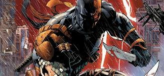
"Você mostrou uma coisa hoje você lutou bem, Mas não vamos esquecer QUEM eu sou O QUE eu sou, Eu posso acabar com isso
a qualquer hora, e essa hora é agora."Ex-militar que foi expulso por desacatar ordens no exercito salvando um aliado. Se tornou um mercenário que assasina por dinheiro com um código de moral de nunca entregar o seu contratante.
Slade wilson "Deathstroke"
-

“Faça suas escolhas ou não terá escolha.”
Johnny Blaze vendeu sua alma para Mefisto em troca da cura para o câncer de seu Pai. Após isso ele encarna o Ghost Rider durante a noite.
Johnny Blaze "Motoqueiro Fantasma"
-
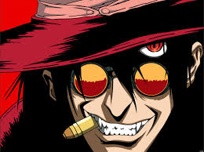
"Sou o instrumento de punição dos céus!"
Alucard é um membro da organização Hellsing, sua função é caçar e aniquilar vampiros e criaturas sobrenaturais espalhadas pela Inglaterra. Seu estilo de luta é inigualável sem brutal e cruel com suas vítimas, geralmente partindo e retalhando seus inimigos de diversas maneiras, muitas vezes até de forma humilhadora e brutal.
Drácula "Alucard"
-
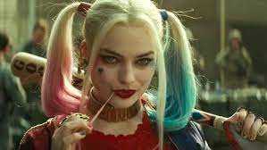
"A infância é quando você idolatra o Batman, a idade adulta é quando você percebe que o Coringa faz mais sentido."
Harleen Quinzel não tão convenientemente chamada, é bem mais conhecida como Arlequina. Arlequina é frequentemente cúmplice e companheira amorosa do vilão Coringa, o qual ela conheceu enquanto trabalhava como psiquiatra no Asilo Arkham, onde o Coringa era paciente.
Harleen Quinzel "Arlequina"
-
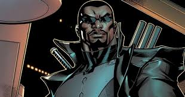
"Vamos jogar um joguinho de vinte perguntas. Dependendo de como você responder, pode sair daqui bronzeado."
Após a morte de sua mãe, Blade tornou-se o tão conhecido caçador de vampiros, já que ele tinha dons anti-vampíricos para o mesmo.
Blade "O Caçador de Vampiros"
-
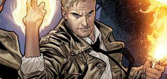
"Não fale bem de mim, isso estragar a minha reputação."
John Constantine era apenas um humano comum com bastante conhecimento sobre conceitos mágicos e ocultos. Logo após uma transfusão de sangue com um demônio, ele despertou seus poderes.
"John Constantine"
-
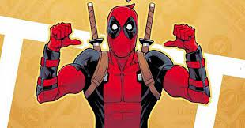
"Você deve estar pensando: 'Era pra ser um filme de super-herói. Mas o cara de vermelho enfiou o outro numa espada'. Surpresa! Sou um super-herói diferente."
Wade Wilson é um canadense muito falastrão e violento, após descobrir um câncer aceitou ser submetido ao projeto arma x, porém acabou fugindo após adquirir seus poderes, tornando-se o mercenário que conhecemos hoje em dia.
Wade Wilson "Deadpool"
-

"As pessoas mudam. Amor e ódio são dois lados da mesma moeda."
Não se sabe sobre o passado de Hisoka, o que sabemos é de seu valor como prodígio sendo um dos usuários mais habilidosos e poderosos da obra de HxH, todo esse poder é utilizado a fim de suprir sua necessidade por boas lutas.
"Hisoka Morow"
-

"Só aqueles que desistiram de viver acham que os sonhos são impossíveis."
De todos os cavaleiros, Ikki era dado como morto por tomar de seu irmãozinho Shun, para salvá-lo, o desafio de ir para a ilha da rainha da morte, no qual viveu o inferno tendo de matar seu mestre e perder sua amada, recebendo assim e sendo digno da armadura de Fênix.
"Ikki de Fênis"
-
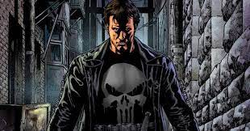
"Ninguém mais quer ser quem é. Internet, redes sociais, shows de talento para idiotas, todos querem ser outra pessoa. Ninguém é feliz apenas se olhando no espelho, olhando para si mesmo. Isso significa que você também não precisa se responsabilizar."
Usando métodos um tanto quanto... diferentes como tortura, sequestro, assassinato entre muitos outros Frank considera isso como uma forma mais "tática" de lidar com o crime que enfrenta. O que motivou suas ações de Justiceiro foi a morte de sua família provocada por membros da máfia.
Frank Castle "Justiceiro"
-

"Nada na vida tem graça se voce não lutar pra conquistar"
Capitão da divisão 13, cargo conquistado matando o ex-capitão, Kenpachi não sabe muito sobre seu passado, ele acredita que nem com grandes desvantagens impostas sobre ele são o suficiente para que sejam de fato um problema para lidar, já que é sedento por lutas, ele sempre vai estar com um sorriso assustador esperando uma luta digna dele usar seu poder máximo.
"Zaraki Kenpachi"
-
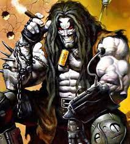
"Você já tá morto, só não percebeu porque meu relógio ta 10 segundos adiantado."
Inspirado na banda Kiss Lobo tem origem alienígena, sendo assim não tem piedade nenhuma em massacrar seus inimigos tendo poderes que até rivalizam com o grande Superman, apesar disso tudo mantém um forte senso de ética e nutre muito carinho com golfinhos espaciais.
"Lobo"
-
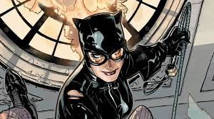
"Os ricos não vão à falência como tudo mundo."
Selina Kyle era Órfã e criou um alter ego chamado Mulher Gato inspirado no Batman, no qual ela tem um romance posteriormente.
Selina Kyle "Mulher-Gato"
-
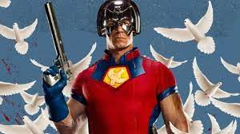
"Empatia.....neste trabalho é o que levá-la à morte."
Christopher Smith lutava com vilões conhecidos como ditadores. Seus esforços de trazer a paz pela violência se tratavam de um problema mental que ele herdou de seu pai.
Christopher Smith "Pacificador"
-
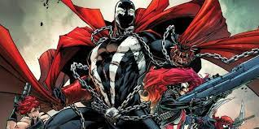
"Se você gosta de palavras bonitas, estar no lugar errado, aqui é pra quem tem o que dizer sem agradar ninguém"
Spawn era o agente da CIA Al Simmon, Após ser morto em uma emboscada tramada por seu chefe, Spawn vai diretamente para o inferno. Lá, ganha poderes após negociar com o demônio Malebolgia para ter sua vingança.
Albert Francis "Spawn"
-
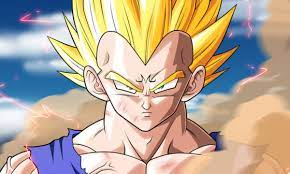
“Isso não pode estar acontecendo. Toda vez que fico mais forte, um poder maior parece me desafiar. É como se o destino me zombasse com um sorriso, assim como Kakaroto."
o príncipe da raça praticamente extinta de guerreiros alienígenas, chamados Saiyajins, Vegeta é conhecido por seu poder inacreditavelmente forte, por seu comportamento arrogante e orgulhoso.
"Vegeta"
-
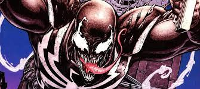
"Saltos gigantes sempre terão um custo."
Venom é um simbionte alienígena de materia orgânica liquida, seu hospedeiro é Eddie Brock, mesmo sendo inimigos do Homem-Aranha ele atual em diversos casos como um anti-héroi.
Venom